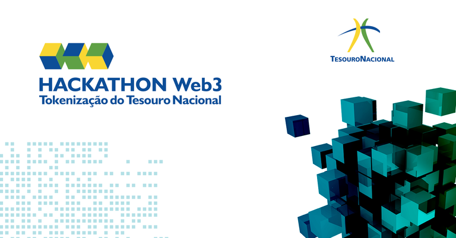
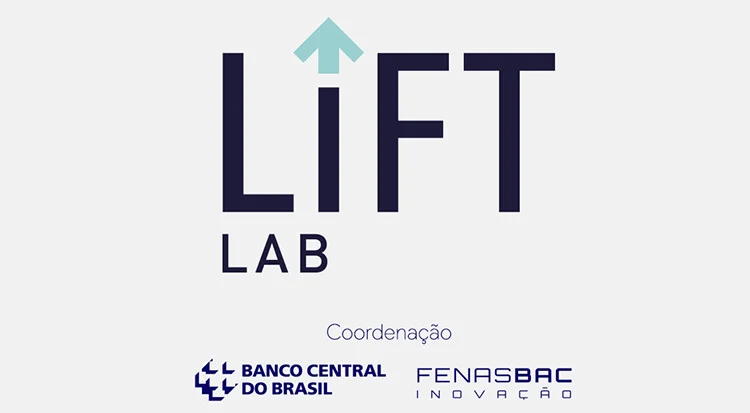

Who We Are
A research and engineering studio bridging institutional innovation with grassroots implementation in blockchain infrastructure.
Refaz develops applied research and technical solutions for decentralized systems — from institutional compliance frameworks to community-based regenerative finance.
We work supporting organizations, startups and institutions in design business, while building local-first applications for environmental data, web3 tech development, collaborative networks, and community empowerment.
We translate complex technical systems into accessible implementations.
Systems architect and researcher focused on protocol design, cryptoeconomics, and regenerative infrastructure. Background in distributed systems, formal verification, and open-source communities. Led protocol research for Ethereum, Celo, and ReFi DAO.
Legal engineer specializing in compliance frameworks for digital assets, tokenomics design, and institutional dialogue. Bridges technical possibility with regulatory reality. Expertise in blockchain governance, smart contract law, and public policy.
Recognition
G20 Tech Sprint
Selected for blockchain innovation in sustainable finance infrastructure

National Treasury Hackathon
Tokenization & Innovation Award for green bond infrastructure

BACEN LIFT Lab
Selected for sustainable digital solutions in regenerative finance